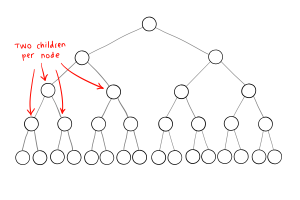

Trees are commonly represented as binary trees, a rooted tree structure in which each node has no more than two children.

A node of a binary tree is represented by a structure containing data and two pointers (left and right) to other structures of the same type.
class Node {
constructor(value = null) {
this.value = value;
this.left = null;
this.right = null;
}
}